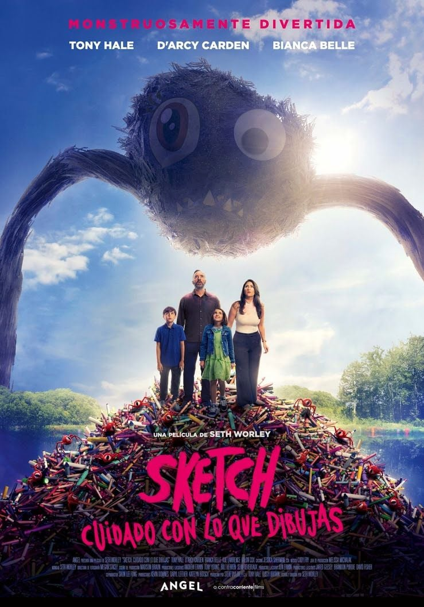

Una nena amb molta imaginació deixa caure accidentalment el seu quadern en un misteriós estany i els seus dibuixos cobren vida. Criatures absurdes i una mica perilloses s'escapen per la ciutat, sembrant el caos. Al costat del seu germà i amb l'ajuda del seu despistat pare, hauran d'atrapar a les seves pròpies creacions abans que el desastre sigui total.